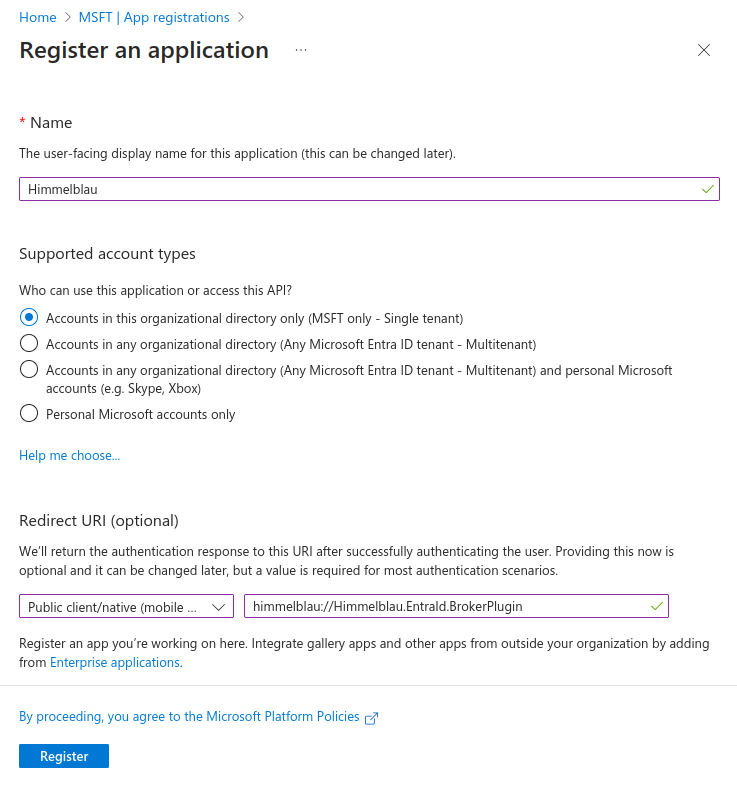
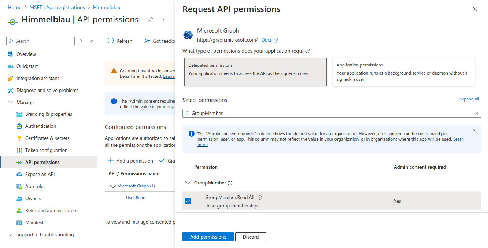
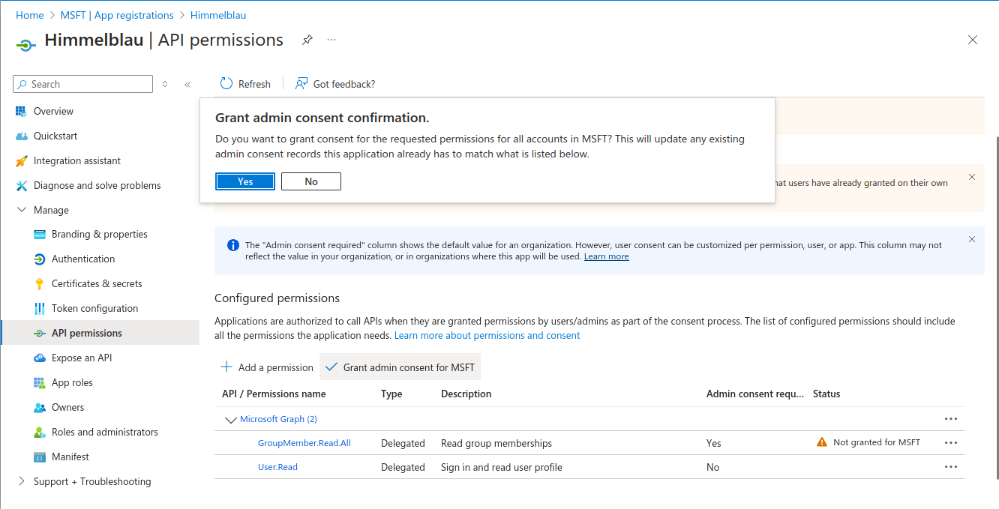

Overview
Himmelblau requires additional API permissions to read group names and extended attributes such as a groups' gidNumber (which is essential for RFC2307 attribute ID mapping). The following instructions guide you through registering an Azure Entra ID application, assigning it permissions, and configuring Himmelblau to use either delegated or confidential client authentication.
With the default configuration, Himmelblau will attempt to resolve group memberships by masquerading as the Edge browser with delegated access, but this doesn't work in every tenant, and has the limitation of only resolving group memberships after each user has authenticated.
Note:
- If you set up confidential client credentials (client secret or certificate) usingaad-tool cred, you do not need to specify anapp_idinhimmelblau.conf.
- If you choose delegated access, you must set anapp_idin your configuration.
1. Register a New Application in Azure Entra ID
- Navigate to the Azure Entra ID portal.
- In the left-hand menu, select App registrations.
- Click New registration.
- Enter a Name for the application (e.g.,
Himmelblau). - Under Supported account types, choose Accounts in this organizational directory only.
- Under Redirect URI, choose Public client/native (mobile & desktop) for the platform and enter
himmelblau://Himmelblau.EntraId.BrokerPluginfor the URI. - Click Register.

2. Assign API Permissions
- In the newly created application, navigate to API permissions.
- Click Add a permission.
- Select Microsoft Graph.
- If utilizing Confidential Client Credentials (Option A below) choose Application permissions, otherwise choose Delegated permissions (Option B).
- Search for
GroupMember.Read.Alland select it. - Click Add permissions.

- Click Grant admin consent to approve these permissions for your tenant.

3. Obtain the Application ID
- Go to Overview in the application’s page.
- Copy the Application (client) ID. This value will be used in Himmelblau’s configuration.
4. Configure Authentication in Himmelblau
You have two main options for enumerating users and group memberships:
Option A: Using Confidential Client Credentials (Recommended)
This method stores a client secret or client certificate securely in Himmelblau’s encrypted cache and removes the need to specify an app_id in himmelblau.conf.
Store a client secret
aad-tool cred secret --client-id <CLIENT_ID> --domain <DOMAIN> --secret <SECRET_VALUE>
- In the Entra ID portal, under Certificates & secrets, create a new Client secret.
- Copy the Value immediately (you won’t see it again) and use it with the above command.
Or set up a client certificate
aad-tool cred cert --client-id <CLIENT_ID> --domain <DOMAIN> --valid-days 365 --cert-out /tmp/my-cert.crt
- Upload
/tmp/my-cert.crtin the Entra ID portal under Certificates & secrets > Certificates.
The private key never leaves your TPM or software HSM.
Note: These credentials expire, and you'll need to repeat these steps each time the credentials expire.
Option B: Using Delegated Authentication
If you do not configure confidential client credentials, add your application ID to himmelblau.conf for delegated authentication.
[example.com]
app_id = 98fa618b-e5d2-4697-b0fd-fe3ec5eecdd3
Replace with your actual Application (client) ID found in the app’s Overview page.
Note: This method prevents the enumeration of rfc2307 attributes and group memberships until after each user authenticates. Utilizing the
aad-tool enumeratecommand can improve attribute resolution, but will need to be performed each time a new user is added to the directory (or whenever their posix attributes are added/modified).
5. Restart Himmelblau Services
To apply changes, restart Himmelblau:
sudo systemctl restart himmelblaud
sudo systemctl restart himmelblaud-tasks
6. (Optional) Pre-cache UID/GID Mappings
You can optionally pre-fetch all users and groups with RFC2307 attributes:
aad-tool enumerate
This avoids lookups being triggered on first login.
7. Managing Credentials
- List stored credentials:
aad-tool cred list --domain <DOMAIN>
- Remove credentials if needed:
aad-tool cred delete --domain <DOMAIN>
Conclusion
By following these steps, Himmelblau will be able to retrieve group information necessary for accurate ID mapping using Entra ID. Ensure that the application has the necessary permissions and is correctly configured in himmelblau.conf for seamless integration.